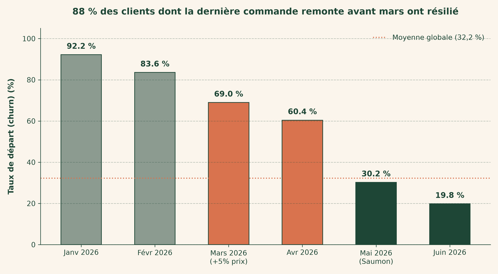
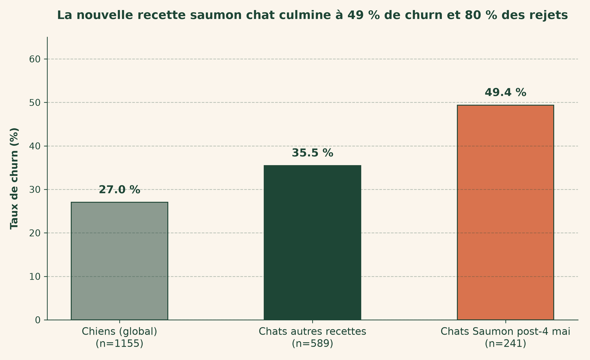
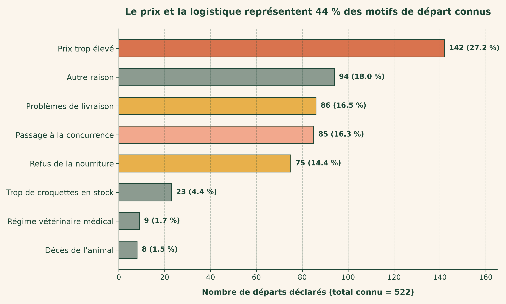
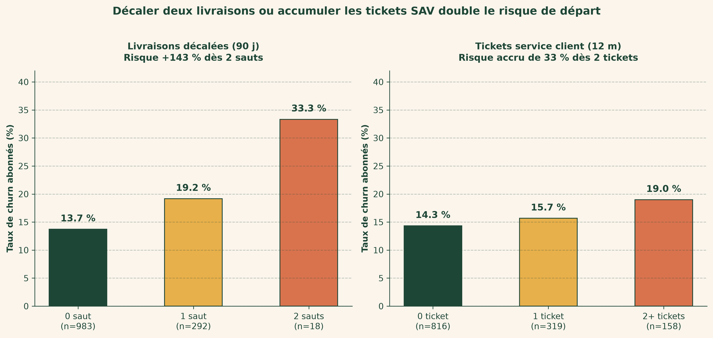
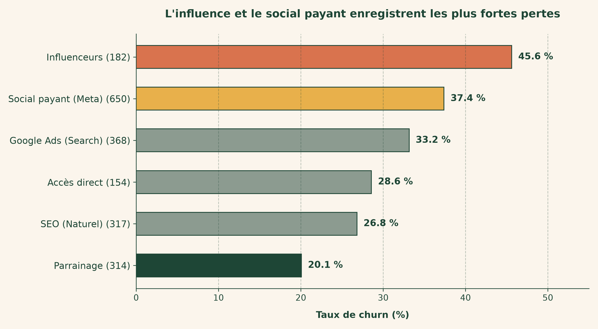
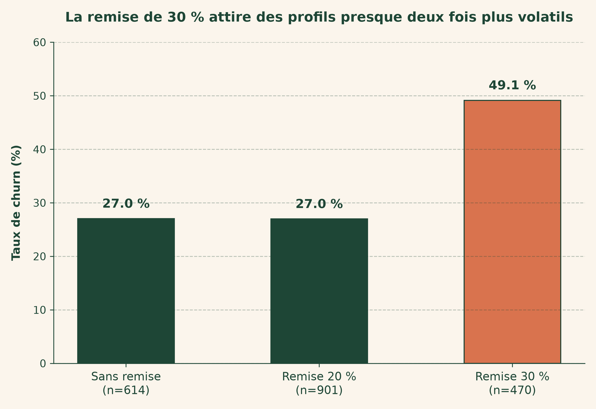

Trois ruptures au printemps ont stoppé la croissance
4,9 %
churn mensuel
501 k€
risque annuel
4,2 ×
fidélité abonnement
Tarifs, transport et recette contestée expliquent la crise.
La rupture de mars a fait bondir le départ des nouveaux inscrits

Le churn atteint 52,2 % pour les inscrits post-mars, contre 27,8 % auparavant.
La recette saumon concentre la moitié des départs de ses acheteurs

Cette référence regroupe 80 % des rejets alimentaires et affiche 49,4 % d'attrition.
Le prix et la logistique expliquent 44 % des départs

La révision tarifaire et les avaries de transport dominent les résiliations déclarées.
Décaler deux livraisons ou accumuler les tickets signale un départ

Le risque d'attrition bondit à 33,3 % dès le second report de commande.
L'influence et le social payant enregistrent les plus fortes pertes

Les influenceurs affichent un coût de 100 € et 45,6 % de churn.
La remise de 30 % attire une clientèle très volatile

Le taux de churn atteint 49,2 % avec ce rabais agressif.
Trois horizons restaurent la fidélité client
Semaine 1
Urgence saumon et appels critiques.
Mois 1
Alertes de surstock.
Trimestre 1
Renégociation logistique.
Le plan de 30 000 euros dégage 65 000 à 145 000 euros net
Prudent
+65 442 €
ROI +218 %
Central
+145 684 €
ROI +486 %
Ce que l'IA a fait, ce que l'humain a validé
IA
Détection des signaux précurseurs et calculs financiers.
Humain
Validation des courriels, gestes commerciaux et logistique.